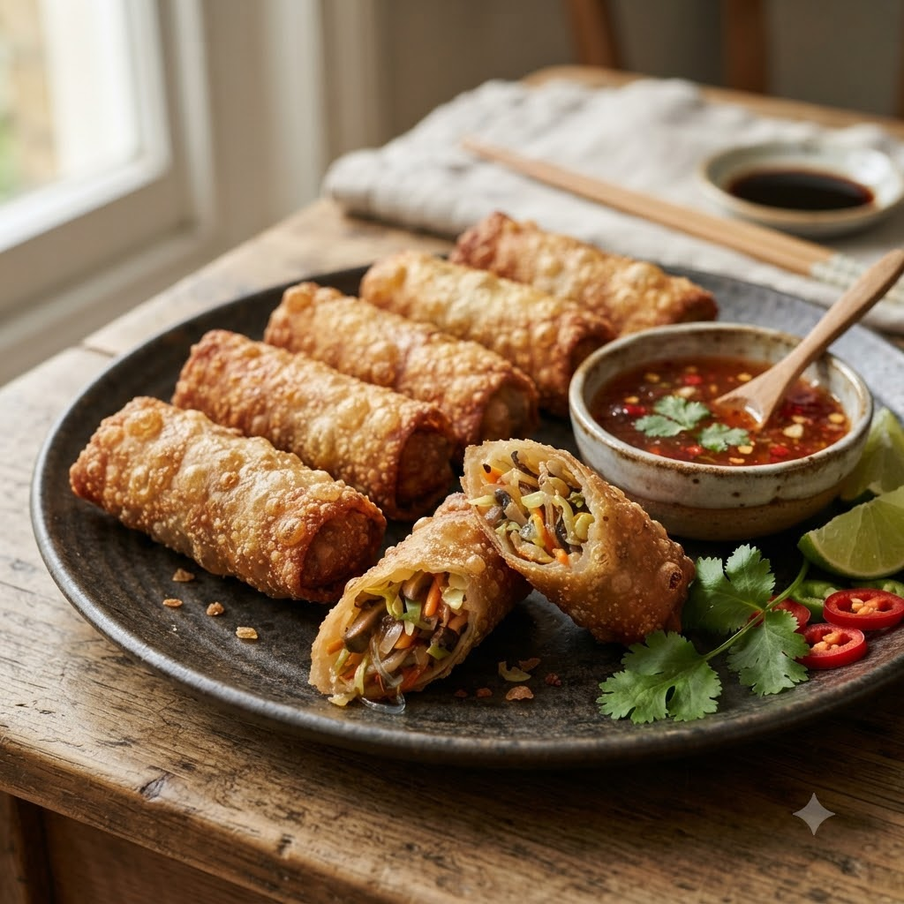

Crunchy Vegetable Spring Rolls

Crunchy Vegetable Spring Rolls
Airfryer – Bake 180°C 11 min (12 rolls) — Serves 4
🔥 Airfryer🍽 Serves 4
Prep ahead: Cook and cool the vegetable filling completely before rolling, so wrappers don’t turn soggy.
Ingredients
- 12 spring roll wrappers
- 1 cup mixed shredded cabbage, carrot, capsicum
- 1 tbsp soy sauce
- 1/2 tsp black pepper (kali mirch)
- Oil spray
Method
1Preheat: Preheat the Airfryer to 180°C for 4 minutes before adding the food to the basket.
2Stir-fry vegetables briefly with soy sauce and pepper; cool completely.
3Roll filling tightly in wrappers, sealing edges with a little water.
4Spray rolls lightly with oil and arrange with space between each.
5Air-fry at 180°C for 11 minutes, turning once, until golden and crisp.